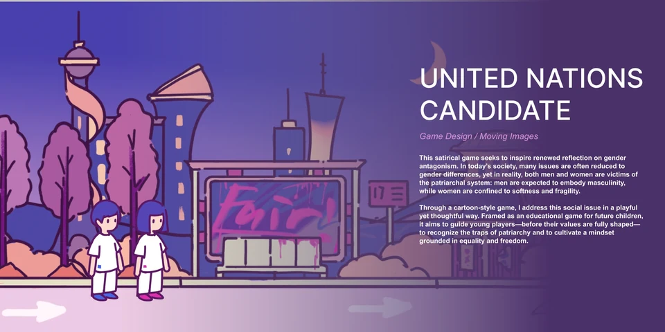
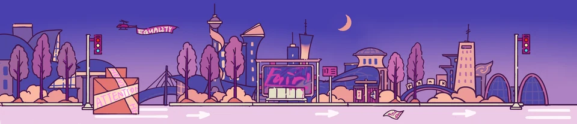
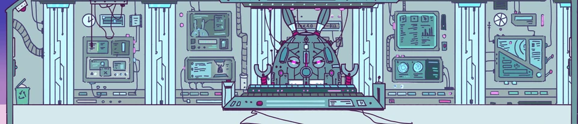
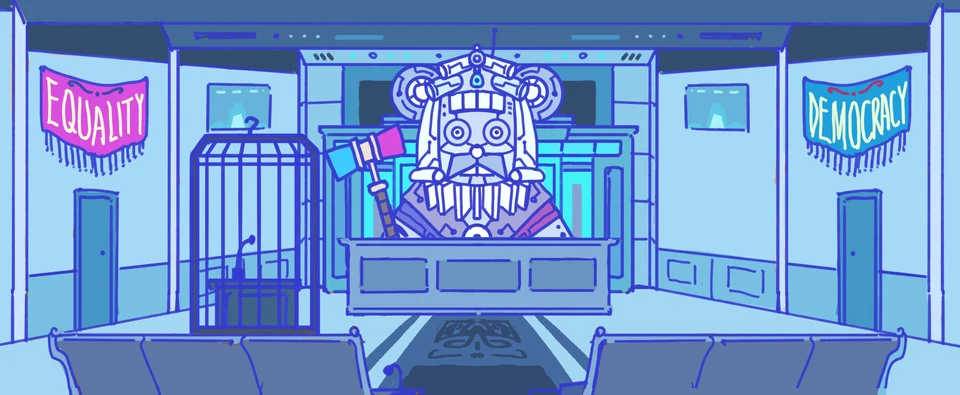
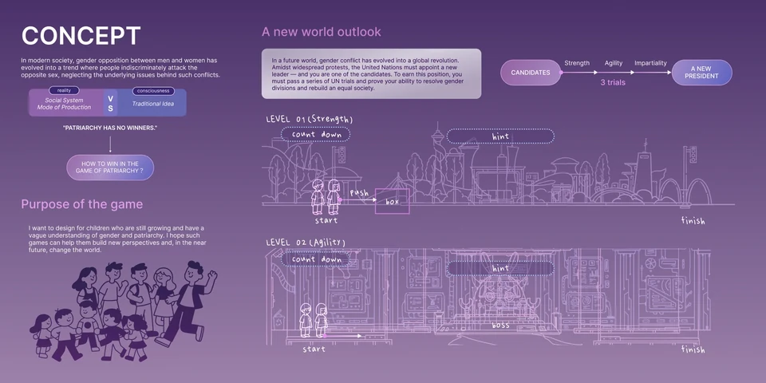
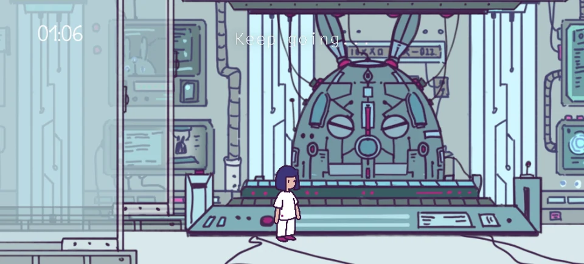
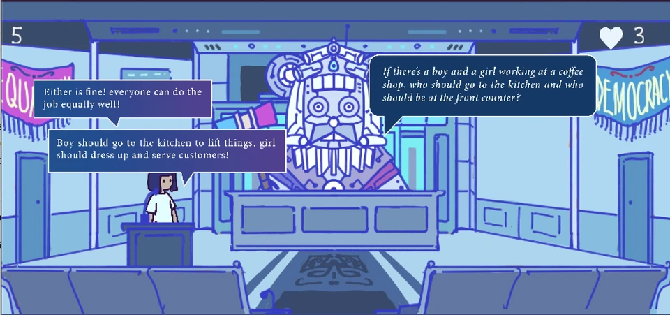
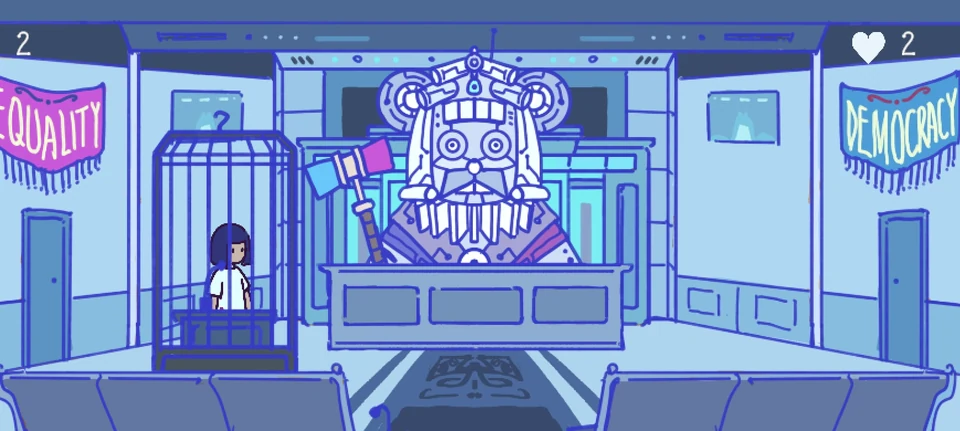
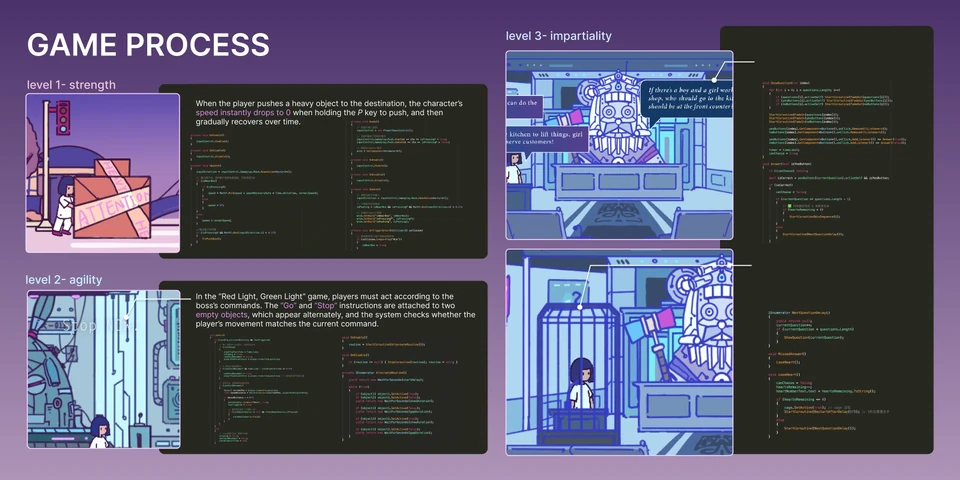

DIGITAL & NEW MEDIA / 2025.09
United Nations Candidate（新共和国候选人）

《新共和国候选人》是一款围绕性别刻板印象与父权结构展开的讽刺性二维游戏。项目以“父权制下没有赢家”为核心命题，关注男性被要求表现强硬、女性被限定为柔弱等社会期待如何同时约束不同性别的人，并尝试以卡通视觉和游戏体验，引导年轻玩家思考平等、自由与相互理解。
故事设定在一个因性别冲突而发生社会变革的未来世界。玩家作为联合国新领导人的候选者，需要通过一系列试炼，证明自己能够回应分歧、重建平等的社会。设计将这一宏观议题转化为具体的行动与选择，让玩家在通关过程中面对带有偏见的提示与规则。



↔︎ 左右滑动查看三个关卡
最终展示将三个关卡分别命名为力量（Strength）、敏捷（Agility）与公正（Impartiality）。力量关卡围绕推移重物与行动速度展开；敏捷关卡通过交替出现的前进、停止指令检验玩家行动；公正关卡则以对话选择呈现工作分工、家庭责任等问题，并结合生命值与错误反馈组织体验。关卡将操作挑战与社会议题结合，邀请玩家辨认习以为常的性别标签。
视觉采用紫、粉、蓝色与手绘线条，塑造城市街道、机械设施和夸张的审判场景。轻松的卡通表象与带有压迫感的空间形成张力，使严肃议题以更易进入的方式展开。项目通过 Unity 游戏实现与影像展示，将角色、场景、界面和关卡流程组织为完整的作品表达。




